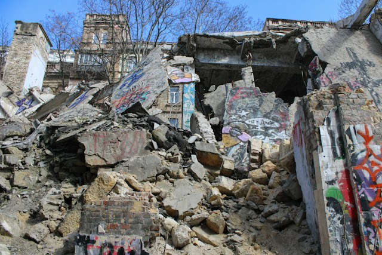

İstanbul, Türkiye'nin Marmara Bölgesi'nde yer alan, nüfusu en yüksek olan
şehirdir ve İstanbul, İstanbul Boğazı sayesinde hem Avrupa hem de Asya'da
bulunan. Resmi verilere göre 2022 yılında İstanbul'un nüfusunun
15 milyon 907 bin 951 kişi olduğu
düşünülmektedir.¹ Bu İstanbul'u Türkiye'nin
tek metropol şehri yapmalşa birlikte İstanbul'u yüksek büyüklüklü bir
deprem esnasında çok fazla etkilenecek bir şehir yapar. Fakat bunun birden
fazla sebebi vardır. Bu etkenleri şöyle sıralayabiliriz:
İstanbul'un Konumu: İstanbul, Marmara Denizi'nden geçen
Kuzey Anadolu Fay Hattı'na yakın bir
şehirdir. Bundan dolayı gerçekleşecek büyük bir deprem İstanbul'a
düşünülemeycek büyüklükte bir zarar verebilir.
İstanbul'un Yüksek Nüfusu: İstanbul'un nüfusu yüzölçümünün aksine çok
yüksek bir nüfusu bulunmakta. Ayrıca sanayi bakımından en gelişmiş şehir
olduğundan dolayı çok fazla göç de almakta. Çok fazla göç alma zaten
yüksek olan nüfus ile birleşince de çarpık kentleşme ve binaların
kalitesiz ve dayanıksız bir biçimde yapılması tarzı sorunlar da
gerçekleşmektedir. Bundan dolayı gerçekleşecek büyük derecesi olan bir
deprem İstanbul'da aşırı yüksek nüfus kaybına sebep de olacaktır.
İstanbul'un Gelişmiş Sanayisi: İstanbul'un Türkiye'de en gelişmiş
sanayiye sahip şehir olması kulağa hoş gelmesine rağmen İstanbul bu
konuda limmitini çok aşmıştır. Resmi verilere göre İstanbul 2022'de
Türkiye'nin gayrisafi yurt içi hasılasının %30,4'ini
karşılamaktadır. ² Buradan da anlaşılabileceği üzerine
büyük dereceli bir depremin gerçekleşmesi direkt Türkiye'nin sanayisine
inanılamaz bir zarar verecektir.
4. Büyük Deprem Olacağı Gerçeği: Bazı insanların inanmamasına rağmen
büyük bir Marmara depremi gerçekleşecektir. Hem de yakın bir zamanda
olacaktır bu. Bundan dolayı bunu reddetmek yerine önlem almak en
mantıklı seçenektir. Jeoloji Mühendisleri Odası'nın incelemeleri
sonucunda İstanbul'da 7 derece ve üzerinde deprem beklendiğini
belirtmektedir.
Peki İstanbul'daki şehirlerden hangileri depreme karşı güvenli? Yandaki
fotoğraf size yardımcı olacaktır.
Bunun yanı sıra https://www.habertakip.org sitesinin paylaştığı habere
göre İstanbul'da zemini sağlam ilçeler şunlardır:³
Sarıyer
Başakşehir
Şişli
Beşiktaş
Eyüp'ün bir kısmı
Kağıthane'nin bir kısmı
Bu bölgeleri söylemeden önce Profesör Doktor Şükrü Ersoy şunu şöylemekte:
"İstanbul'da en sağlam alan Haliç’ten kuzeye doğru Başakşehir’e kadar olup
Sarıyer’e kadar olan alan Türkiye’nin en sağlam kayaçları sayılabilecek
olan bölge.". Yani ona göre buralar İstanbul'un en sağlam bölgeleridir.
Bundan sonra ise Prof. Dr. Şükrü Ersoy'un deyimiyle "Anadolu Yakası genel
olarak sağlam.". Fakat Anadolu Yakası'nda ise çürük bir alan olduğunu ve
orayı ayırt etmek gerektiğini söylemekte Prof. Dr. Şükrü Ersoy.
Bunun yanı sıra Şile'nin kısmen iyi olduğunu;
Çekmeköy,Beykoz,Üsküdar,Ümraniye,Kadıköy,Ataşehir'in iyi olduğunu
belirtmekte. Yalnız Maltepe ve Kartal'ın kıyılarının iyi değil iç
kısımlarının iyi olduğunu; düz alanların, sahil kenarlarının ve dere
yataklarında ev yapmanın problemli olduğunun söylemektedir.
Avrupa Yakası'nda ise zeminleri kötü olan bölgeler sırasıyla:
Büyükçekmece
Küçükçekmece
Beylikdüzü
Avcılar
Bakırköy
Zeytinburnu
Fatih
Güngören
Esenler
Bağcılar
Buraların zemininin kötü olduğunu ve riskin yüksek olduğunu söylemekte
Profesör Doktor Şükrü Ersoy. Ardından da bina yapıldığında temelinin suyla
buluşmaması, zeminin sudan arındırılması gerektiğini dile getirmekte.
Depremden Nasıl Korunulmalı?
Depreme Karşı Hangi Önlemler Alınmalı?

Deprem insanlık için en büyük felaketlerden biri olmasına rağmen bu
depreme karşı önlem almamızı engellemez. Peki depreme karşı hangi
önlemleri almalıyız?
Bina İnşaatı Sırasında:
Binalar zemini sağlam, kaya olan yerlere yapılmalıdır. Zemini suyla dolu
olan; çamur, bataklık olan yerlere yapılmamalıdır.
Bina yapımında malzemeden kaçınılmamalıdır. Eksik malzeme kullanımı veya
belli başlı binada bulunması gereken sistemlerin yapılmaması insanların
hem günlük hayatında hem de deprem tarzı felaketler esnasında büyük
sorunlara sebep olabilir.
İnşaat Bitiminden Sonra:
Belediye kontrolü doğru düzgün bir biçimde yapılmalıdır. Belediye veya
herhangi yetkili bir kurum bu tarz konularda rüşvet almamalıdır.
Alındığı takdirde Maraş depreminde de gördüğümüz gibi insanlar
hayatlarını liyakatsizlikten dolayı kaybedecektir.
Pazarlamada yalancılıktan kaçınılmalıdır. Müteahhitlerin para kazanma
hırsı yüzünden pazarlama sırasında yalan söylemesi maalesef ki ççok
fazla gerçekleşmektedir. Bundan dolayı evinizin depreme karşı güvenli
olmadığını ve size yalan söylendiğini düşünüyorsanız bina için bir
deprem kontrolü yapılmalıdır.
Binada İnsanlar Yaşarken:
Binanın deprem kontrolü yapılmalıdır. Bu sayede deprem sırasında ne
kadar güvenli olacağınızı öğrenebilirsiniz.
Evinizdeki büyük olan eşyalar duvara sabitlenmelidir. Bunun sebebi ise
deprem sırasında buzdolabı, dolap, kitaplık tarzı büyük eşyalar düşüp
eve ama daha önemlisi size zarar verebilir.
Evinizde bir deprem kiti bulunmalıdır. Eğer enkaz altında kalacak
olursanız bu deprem kiti hayatınızı kurtarabilir.
Deprem Kitinizde Neler Bulunmalı:⁴
Gıda: Yüksek kalorili, vitamin ve karbonhidrat içeren, su kaybını
önleyen ve dayanıklı (çabuk bozulmayan) gıdalar (Konserve, kuru
meyveler, tahin–pekmez, meyve suyu, vb.).
Önemli Belge Fotokopileri: Kimlik kartları (nüfus cüzdanı, ehliyet vb.),
Tapu, sigorta, ruhsat belgeleri, Zorunlu Deprem Poliçesi, Diplomalar,
Pasaport, banka cüzdanı vb., Diğer (evcil hayvan sağlık karnesi, vb.)
Giyecekler: İç çamaşırı, Çorap, Yağmurluk, İklime uygun giysiler
Su: Her bir aile üyesi düşünülerek yeterli içme suyu alınmalı.
Hijyen Malzemeleri: Sabun ve Dezenfektanlar, Diş fırçası ve macunu,
Islak mendil, Tuvalet kâğıdı, Hijyenik ped
Diğer Malzemeler: İlk yardım çantası, Uyku tulumu veya battaniye, Çakı,
düdük, küçük makas, Kâğıt, kalem, Pilli radyo, el feneri ve yedek piller
(dayanıklı/uzun ömürlü pil seçilmeli)
Deprem Esnasında Ne Yapılmalı
Deprem öncesinde hangi önlemler alınması gerekiyor sorusuna cevap
verildiğine göre diğer sorumuz deprem esnasında ne yapılması gerektiği
olacaktır. O zaman yapılması gerekn şeyleri sayalım.⁵
Bina içindeyseniz:
Panik yapılmamalı, olabildiğince sakin olunmalıdır. Çünkü sakin olmayıp
panik yaptığınız zaman normalde yapmayacağınız hareketler
sergileyebilirsiniz. Bu yüzden ülkemizde deprem esnasında camdan aşağı
atlama hareketini görebiliyoruz. Eğer sakin kalırsanız anca doğru karar
verebilir ve hayatta kalma şansınızı arttırabilirsiniz.
Merdivenlere ya da çıkışlara doğru koşmayın. Sarsıntı bitene kadar
içeride kalın, ancak sarsıntı bitince dışarı çıkmak güvenlidir. Sarsıntı
sırasında binayı terk etmeye çalışmayın.
Sabitlenmemiş cisimlerden uzak durulmalıdır.
ÇÖK-KAPAN-TUTUN: Deprem sırasında
içi dolu sandık, desteklenmiş masa altı, dolgun ve hacimli koltuk,
kanepe tarzı bir cismin yanın çömelerek ya da uzanarak kendinize hayat
üçgeni oluşturmalısınız. Başınızı iki elinizin arasına alarak ya da
yastık vb. bir koruyucu malzeme ile koruyunuz. Kısacası diz üstü
ÇÖK, baş ve enseyi koruyacak
şekilde KAPAN, düşmemek için
sabit bir yere TUTUN hareketini
yapın Sarsıntı bitene kadar olduğunuz yerde kalın.
Cam, pencere, dışarıya bakan duvar ve kapılardan, aydınlatma tesisatı
veya armatürü gibi üzerinize düşecek her tür eşyadan uzak durun.
Sarsıntı başladığında yataktaysanız orada kalın. Üzerinize düşecek ağır
bir eşya yoksa bir yastıkla başınızı koruyun; varsa en yakındaki güvenli
alana geçin.
Size yakın çok sağlam ve yüke dayanıklı bildiğiniz bir kapı değilse,
kapıyı kullanmayın. Çoğu iç mekan kapısı basitçe inşa edilmiştir ve sizi
korumaktan uzaktır.
Balkona çıkmayın. Balkonlardan ya da pencerelerden atlamayın.
Asansörü kullanmayın. Sarsıntı BİTTİKTEN SONRA dikkatli bir şekilde
merdivenleri kullanın.
ACİL DURUMLARI ve YANGINLARI bildirmek dışında telefonları
KULLANMAYIN. Kibrit ve çakmak YAKMAYIN, elektrik düğmelerine
DOKUNMAYIN.
Mutfak, imalathane, laboratuvar gibi iş aletlerinin bulunduğu yerlerde;
ocak, fırın vb. cihazları kapatın. Dökülebilecek malzeme ve maddelerden
uzaklaşın.
Her büyük depremden sonra mutlaka artçı deprem olur. Artçı depremler
zaman içerisinde seyrekleşir ve büyüklükleri azalır. Artçı depremler
hasarlı binalarda zarara yol açabilir. Bu nedenle sarsıntılar tamamen
bitene kadar hasarlı binalara girmeyin.
Artçı depremler sırasında da ana depremde yapmanız gerekenleri yapın.
Bina dışında, açık alandaysanız:
Dışarıda kalın.
Enerji hatlarından, diğer binalardan, direklerden, ağaçlardan ve duvar
diplerinden uzaklaşın.
Açık arazide çömelerek etraftan gelen tehlikelere karşı hazırlıklı olun.
Deniz kıyısından uzaklaşın.
Toprak kayması, taş veya kaya düşebilecek yamaç altlarında bulunmayın.
Böyle bir ortamda bulunuyorsanız, en seri şekilde güvenli bir ortama
geçin.
Binalardan düşebilecek baca, cam kırıkları ve sıvalara karşı tedbirli
olun.
Toprak altındaki kanalizasyon, elektrik ve gaz hatlarından gelecek
tehlikelere karşı dikkatli olun.
En büyük tehlike binaların dış duvarlarının yıkılmasıdır. Depremlerdeki
ölümlerin önemli bir kısmını bina içinden dışarı kaçarak enkaz altında
kalanlar oluşturabilmektedir. Deprem sırasındaki yer hareketi nadiren
ölüme veya yaralanmaya sebep olur. Depremle ilgili çoğu ölüm çöken
duvarlar, parçalanan camlar ve düşen eşyalardan kaynaklanmaktadır.
Araç kullanıyorsanız:
Araç kara yolunda seyir halindeyken sarsıntı olursa ve bulunduğunuz yer
güvenli ise ( bina, ağaç, direkler yanında, üst geçit altlarında
durmaktan sakınarak) yolu kapatmadan, sağa yanaşıp durun. Kontak
anahtarını yerinde bırakıp, pencereler kapalı olarak araç içerisinde
kalın.
Sarsıntının geçmesini ihtiyatla bekleyin. Depremde hasar gören yol,
köprü ve rampaları kullanmayın.
Normal trafikten, ağaçlardan, direklerden ve enerji nakil hatlarından
mümkün olduğu kadar uzaklaşın. Ancak sarsıntı durduktan sonra açık
alanlara gidin.
Araç meskun mahallerde ise ya da güvenli bir yerde değilse aracı
durdurun; kontak anahtarını üzerinde bırakarak aracı terk edin ve açık
alanlara gidin.
Bir tünelin içinde iseniz ve çıkışa yakın değilseniz, aracınızı durdurup
aşağıya inin ve aracınızın yanına yan yatarak ayaklarınızı karnınıza
çekin, ellerinizi de başınızın üstüne kavuşturun.
Kapalı bir otoparkta iseniz; arabanızın dışına çıkıp yanına yatın.
Üzerinize yıkılacak tavan, tünel gibi büyük kitleler aracı belki ezecek,
ama yok etmeyecektir. Araç içinde olduğunuz takdirde, üzerinize düşen
bir parça ile ezilmenize sebep olabilir.
Metroda veya diğer toplu taşıma araçlarındaysanız:
Gerekmedikçe, kesinlikle metro ve trenden inmeyin. Elektriğe kapılabilir
veya diğer bir trenin çarpması ile zarar görebilirsiniz.
Trenin içinde sıkıca tutturulmuş askı, korkuluk veya herhangi bir yere
tutunun.
Metro veya tren personeli tarafından verilen talimatları izleyin.
Enkaz altında kaldıysanız:
Kibrit ve çakmak yakmayın.
Hareket etmeyin ve toz kaldırmayın.
Ağzınızı ve burnunuzu mendil ya da kıyafetinizle kapatın.
Borulara ya da duvarlara vurarak yerinizi arama kurtarma ekiplerine
bildirmeye çalışın ve ıslık çalın. Bağırmayı son çare olarak kullanın.
Çünkü bağırmak tehlikeli boyutlarda toz yutmanıza neden olabilir.
Eğer AFAD tarafından belirtilen bu önerilere uyarsanız deprem sırasındaki
hayatta kalma olasılığınızı olabildiğince arttırabilirsiniz.
Depremden Sonra Ne Yapılmalı:
Sarsıntı bittikten sonra hayatta kaldığınızı farz edersek, ne yapmanız
lazım? Bu adımlar size yardımcı olacaktır:⁶
Emniyetinizden emin olduktan sonra binayı terk edin.
Sarsıntı geçtikten sonra elektrik, gaz ve su vanalarını KAPATIN; soba ve
ısıtıcıları SÖNDÜRÜN. Diğer güvenlik önlemlerini alın; daha önceden
hazırlanmış acil durum çantası ile gerekli olan eşya ve malzemeyi
yanınıza alarak binayı daha önce tespit ettiğiniz yoldan, acil durum
çantanızla beraber derhal terk edip toplanma bölgesine gidin.
Dışarı çıktığınızda deniz kenarına yakınsanız, tsunami tehlikesinden
dolayı orayı hemen terk edip, uzaklaşın.
Deprem sonrası ilk 72 saat boyunca yardım ekiplerinin gelmesini
bekleyin.
Deprem sonrası eğer yardıma ihtiyacı olan yaşlı, bebek, çocuk, engelli
ve hamilelere yardımda bulunmaya çalışın. Fakat yardım edemeyecekseniz
yardım edebilecek birini arayın.
Eğer bu uyarılara uyarsınız, hayatta kalma olasılığınızı en yükseğe
çıkarabilirsiniz.
{kind=link}
{kind=link}